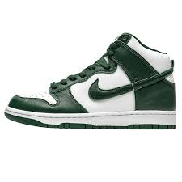
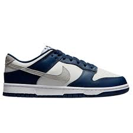
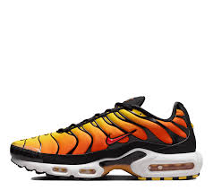

Popular Colorways : White/Black-Football Grey-Cobalt Bliss-Pink Spell/ Coconut Milk/Bright Crimson
Product Description :
The Nike Invincible Run 3 sneaker stands out from others due to the amount of cushioning underfoot.
ZoomX foam cushioning in the midsole conforms to the foot shape and added foam height provides a soft underfoot feel. The lightweight Flyknit upper is both breathable and durable. In terms of branding, a Swoosh made of stripes graces the side panel, another Swoosh covers the vamp, and lettering along the heel spells out 'NIKE INVINCIBLE RUN 3'.
In addition, the midsole features an orange rectangle with Nike ZoomX foam branding.
The Nike ZoomX Streakfly is a lightweight high-performance running shoe.
Whether for training or race days, the sleek Nike ZoomX Streakfly has a low profile and provides adaptive and nimble responsive cushioning with ZoomX foam.
The ultra-thin white knit upper gives the shoe an aerodynamic design. Adding to this design is the unique lacing system that runs asymmetrically and towards the lateral side.
A large black Nike Swoosh is presented in a flying fashion swooping across the medial side and toebox, with a smaller similar styled Swoosh on the lateral side.
According to our experts, this shoe's prominent feature has to be its lightweight responsiveness, which is achieved thanks in part to the full length ZoomX midsole.
Nike High Tops

Price: £72 apprx
Popular Colorways : Denim Blue/White , Total Orange/Black/White
Product Description :
The Nike High tops are a timeless classic ! The high tops are made from soft full-grain leather,
a plush padded collar and Nike Air cushioning. Additionally, its has a rubber outsole with a concentric-circles pattern for traction.
Nike Dunk Lows

Price: £77 apprx
Popular Colorways : Green Yellow/ Grey Fog/ Black/ White/ Red
Product Description :
The Nike Dunk Lows created for the hardwood but taken to the streets,
the Nike Dunk Low Retro returns with crisp overlays and original team colours.
This basketball icon channels '80s vibes with premium leather in the upper that looks good and breaks in even better.
Modern footwear technology helps bring the comfort into the 21st century.
Nike Air Max Plus

Price: £175 apprx
Popular Colorways : Black/Pure Platinum/Habanero Red/White
Product Description :
The Nike Air Max Plus Tiger better than gold and more sensory-stimulating than grandma's raspberry pie,
this fiery take on the Air Max Plus delivers head-turning gradient glory.
Its tuned Nike Air experience offers unbelievable cushioning. For extra splash,
the prominent arch on the midsole draws inspiration from a tiger.
But don't be fooled—this sneaker is all fire.